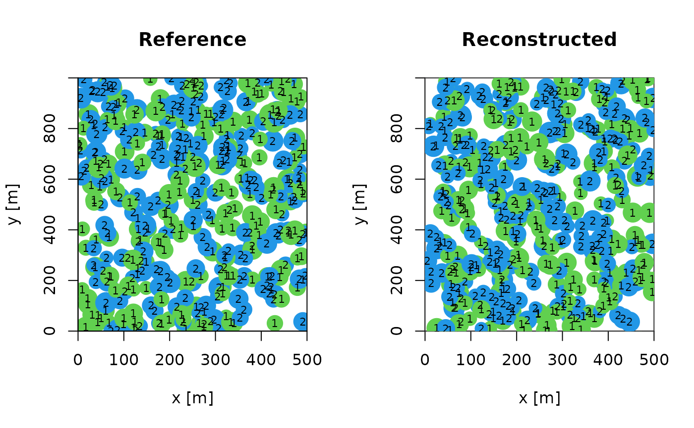

Multi-trait point pattern reconstruction of plant ecosystems
2025-01-10
Source:vignettes/articles/reconstruct_multi_patterns.Rmd
reconstruct_multi_patterns.Rmd…Work-in progress…
If you want more information about multi-trait point pattern reconstruction, please refer to the corresponding paper.
If you wish to include several marks simultaneously in a reconstruction, you can use the following code. The libraries used must first be loaded.
Please note that the maximum number of iterations has been set to
max_steps = 10000andn_repetitions = 1/n_repetitions = 3to keep computational time low for this example. For real-world applications, it is advisable to raise these values.
The next step is to load the point pattern, here is an example of a random point pattern with several marks to show the structure of the data used.
xr <- 500
yr <- 1000
N <- 400
y <- runif(N, min = 0, max = yr)
x <- runif(N, min = 0, max = xr)
species <- sample(c("A","B"), N, replace = TRUE)
diameter <- runif(N, 0.1, 0.4)
random <- data.frame(x = x, y = y, dbh = diameter, species = factor(species))
marked_pattern <- as.ppp(random, W = owin(c(0, xr), c(0, yr))) The point pattern must contain the following data An x and y coordinate, a metric mark (in metres) and a nominal mark defined as a factor. The order must be respected. Now the reconstruction with several marks can be started with the following code. Note that the maximum number of iterations has been set to max_steps = 10000 to keep the computation time for this example to a minimum. For an application, this value should be increased according to the number of points in the pattern.
reconstruction <- reconstruct_pattern_multi(marked_pattern, n_repetitions = 1, max_steps = 10000, issue = 5000)## > Progress: || iterations: 0 || Simulation progress: 0% || energy = 0.04961 || energy improvement = 0 > Progress: || iterations: 5000 || Simulation progress: 50% || energy = 0.00078 || energy improvement = 511 > Progress: || iterations: 10000 || Simulation progress: 100% || energy = 0.00077 || energy improvement = 686 As a result, you will receive a list containing a variety of information, for example, the reference pattern, the reconstructed pattern, the number of successful actions, the energy development and much more. If you wish to perform several reconstructions of the same reference pattern, you must increase n_repetitions to the desired number.
reconstruction_2 <- reconstruct_pattern_multi(marked_pattern, n_repetitions = 3, max_steps = 10000, issue = 5000)## > Progress: reconstruction_1 || iterations: 0 || Simulation progress: 0% || energy = 0.0319 || energy improvement = 0 > Progress: reconstruction_1 || iterations: 5000 || Simulation progress: 50% || energy = 0.00028 || energy improvement = 525 > Progress: reconstruction_1 || iterations: 10000 || Simulation progress: 100% || energy = 0.00026 || energy improvement = 731
##
## > Progress: reconstruction_2 || iterations: 0 || Simulation progress: 0% || energy = 0.00399 || energy improvement = 0 > Progress: reconstruction_2 || iterations: 5000 || Simulation progress: 50% || energy = 0.00091 || energy improvement = 442 > Progress: reconstruction_2 || iterations: 10000 || Simulation progress: 100% || energy = 0.00089 || energy improvement = 620
##
## > Progress: reconstruction_3 || iterations: 0 || Simulation progress: 0% || energy = 0.11049 || energy improvement = 0 > Progress: reconstruction_3 || iterations: 5000 || Simulation progress: 50% || energy = 5e-04 || energy improvement = 495 > Progress: reconstruction_3 || iterations: 10000 || Simulation progress: 100% || energy = 5e-04 || energy improvement = 640 To activate a visualisation of the reconstruction that shows the changes in the pattern at the relevant time, you must proceed as follows.
reconstruction_3 <- reconstruct_pattern_multi(marked_pattern, n_repetitions = 1, max_steps = 10000, issue = 5000, plot = TRUE)## > Progress: || iterations: 0 || Simulation progress: 0% || energy = 0.11639 ||
## energy improvement = 0 > Progress: || iterations: 5000 || Simulation progress:
## 50% || energy = 0.00031 || energy improvement = 597
## > Progress: || iterations: 10000 || Simulation progress: 100% || energy = 0.00029 || energy improvement = 761 Finally, you can use the plot() function to view
different summary statistics of the reference pattern (dashed line)
compared to the reconstructed pattern (solid line).
plot(reconstruction, verbose = FALSE)